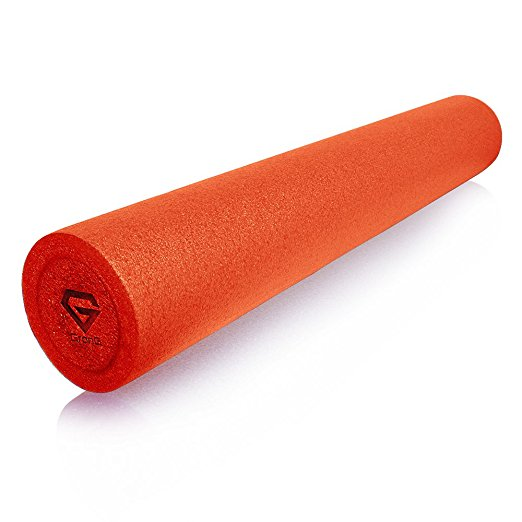
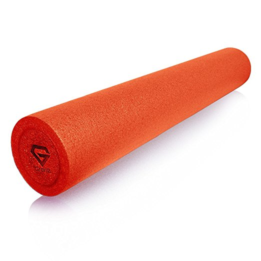

ストレッチポール
Jun 13, 2018
首痛・姿勢改善のためにストレッチポール買ってみた．

高校生のころ，部活でよくつかっていたのが懐かしい．
基本乗るだけでもOK．
２週間ほど使ってみたところ，首や腰の “ツマリ” みたいなものがなくなったのを実感できた．
特に両手足を広げてポールに全体重をあずける姿勢を取ると，デスクワークと間逆な姿勢が確保できてよい．

首痛・姿勢改善のためにストレッチポール買ってみた．

高校生のころ，部活でよくつかっていたのが懐かしい．
基本乗るだけでもOK．
２週間ほど使ってみたところ，首や腰の “ツマリ” みたいなものがなくなったのを実感できた．
特に両手足を広げてポールに全体重をあずける姿勢を取ると，デスクワークと間逆な姿勢が確保できてよい．